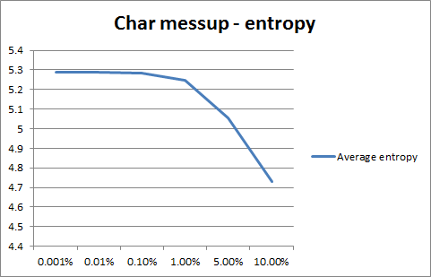
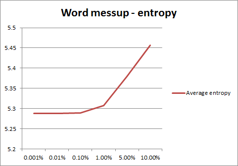
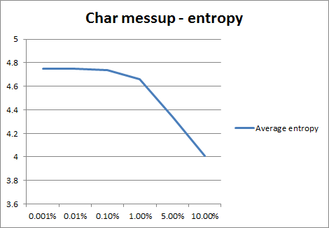
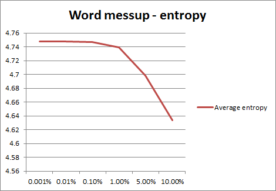

Homework NLP
Complete list of (messup) entropies
English text
Original conditional entropy of word distribution is 5.28742827295369
Original perplexity is 39.05480826965449
Character messups
| Messup | Min entropy | Average entropy | Max entropy |
| 10.0% |
4.724125550696877 |
4.729392385336163 |
4.735172218866995 |
| 5.0% |
5.05249788425531 |
5.055239585545435 |
5.058489514983067 |
| 1.0% |
5.247432052137289 |
5.249386916847838 |
5.252450831076827 |
| 0.1% |
5.282740173618398 |
5.283926021028528 |
5.2847967284418855 |
| 0.01% |
5.286793540582245 |
5.2870356338575135 |
5.287372376223558 |
| 0.001% |
5.287299051439087 |
5.287386138643583 |
5.2874641620634115 |

Words messups
| Messup | Min entropy | Average entropy | Max entropy |
| 10.0% |
5.452706419353453 |
5.456670138667903 |
5.462007165966479 |
| 5.0% |
5.375632797695655 |
5.37978435551277 |
5.382475103283452 |
| 1.0% |
5.30499721867868 |
5.307302034621703 |
5.308842457557511 |
| 0.1% |
5.288976852639026 |
5.289376670705414 |
5.289874477636599 |
| 0.01% |
5.2874695520219905 |
5.287589075612554 |
5.287727750749908 |
| 0.001% |
5.2874132507412295 |
5.2874609191104325 |
5.287534491234263 |

Homework NLP
Czech text
Original conditional entropy of word distribution is 4.7478264493982305
Original perplexity is 26.868175442801284
Character messups
| Messup | Min entropy | Average entropy | Max entropy |
| 10.0% |
4.001020529350257 |
4.006952764323781 |
4.0097711735342125 |
| 5.0% |
4.333236008789123 |
4.338052652966491 |
4.342479862499147 |
| 1.0% |
4.656679360421411 |
4.65832706594813 |
4.660703122556252 |
| 0.1% |
4.737291453073188 |
4.738456496598099 |
4.739334337554472 |
| 0.01% |
4.746650939115016 |
4.746897063802062 |
4.747130033615401 |
| 0.001% |
4.747655039629523 |
4.747725174974699 |
4.7477927799086554 |

Words messups
| Messup | Min entropy | Average entropy | Max entropy |
| 10.0% |
4.627972393287629 |
4.633771782005146 |
4.638435495303188 |
| 5.0% |
4.694503588604242 |
4.698104727558809 |
4.701492919896906 |
| 1.0% |
4.738192889143172 |
4.739405581125805 |
4.740292878728817 |
| 0.1% |
4.746663858477739 |
4.747068840767062 |
4.747424889108662 |
| 0.01% |
4.747600941592755 |
4.7477395608292134 |
4.747845571539242 |
| 0.001% |
4.747763984893925 |
4.747805593099185 |
4.747846882555401 |
